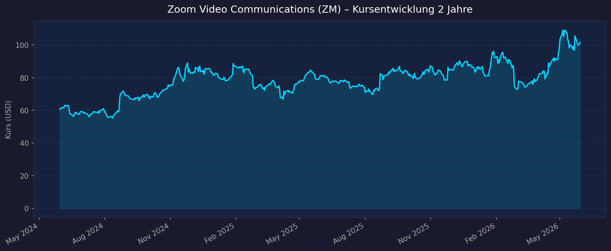
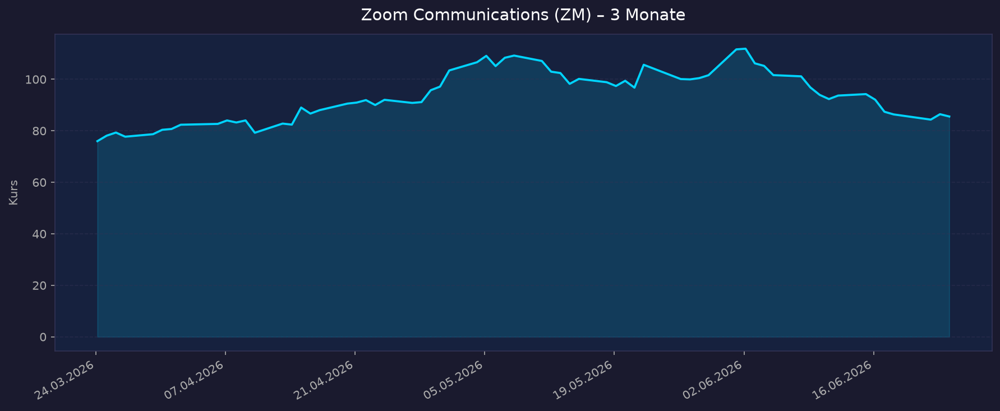

📈 1. Kursentwicklung
Aktueller Kurs: $85,55 | 52W-Hoch: $114,74 | 52W-Tief: $69,15 | Abstand vom Hoch: −25,5 %
Chart – 2 Jahre

Chart – 3 Monate

| Zeitraum | Kurs Start | Kurs Ende | Veränderung |
|---|---|---|---|
| 52 Wochen (Juni 2025 → Juni 2026) | ~$69,15 (52W-Tief) | $85,55 | +23,7 % |
| 3 Monate (März 2026 → Juni 2026) | ~$78 | $85,55 | ~+10 % |
| 52-Wochen-Hoch | — | $114,74 | — |
| 52-Wochen-Tief | — | $69,15 | — |
💡 Kontext: Zoom ist −25,5 % unter dem 52W-Hoch, aber fundamental extrem günstig: PE TTM 12,6x, FCF-Yield 6,85 %, $1,7 Mrd. Jahres-FCF auf $25 Mrd. Marktkapitalisierung. Das Risiko: Revenue wächst nur +5,5 % YoY — die Frage ist, ob AI Companion dieses Wachstum wieder auf 10–15 % beschleunigen kann.
💹 2. KGV-Entwicklung (Kurs-Gewinn-Verhältnis)
Aktuelles KGV (GAAP TTM): 12,6x | Forward PE (non-GAAP FY2027E): 13,6x
| Zeitraum | KGV | Einordnung |
|---|---|---|
| Aktuell GAAP TTM | 12,6x | Günstigstes GAAP-PE aller analysierten Aktien |
| Forward non-GAAP FY2027E | ~14,3x ($85,55 / $5,98 guidance EPS) | Extrem günstig für Profitable Tech |
| ATH 2020/2021 | ~200–400x | Massive KGV-Kompression von ATH |
| 2022–2023 | ~25–40x | Post-Hype-Normalisierung |
| 2024–2025 | ~15–25x | Einstiegen machen Verluste zurück |
Bewertung: Das KGV von 12,6x (GAAP TTM) ist für ein profitables SaaS-Unternehmen mit $1,7 Mrd. FCF außergewöhnlich günstig — vergleichbar mit Value-Aktien, nicht Tech. Die Markt-Skepsis dreht sich um das langsame Revenue-Wachstum (+5,5 % YoY). Das non-GAAP Forward PE von 14,3x bei FY2027-Guidance $5,96–6,00 EPS spiegelt die günstige Bewertung wider.
💰 3. Sales Multiple (Kurs-Umsatz-Verhältnis / P/S)
Aktuelles P/S-Verhältnis: 5,09x
| Zeitraum | P/S Ratio | Einordnung |
|---|---|---|
| Aktuell (Juni 2026) | 5,09x | Moderat für SaaS (Peak 2021: >70x!) |
| 2023–2024 | ~5–8x | Normalisierung |
| ATH 2020 | ~70–120x | Bubble-Level |
| FY2027E Forward P/S | ~4,9x | Bei $5,08–5,09 Mrd. Revenue Guidance |
Trend: P/S von Bubble-Level >70x auf 5x komprimiert — bei weitem das größte P/S-Multiple-Deleveraging aller analysierten Unternehmen. Bietet jetzt Bewertungsschutz.
📊 4. Handelsvolumen (Trading Volume)
| Zeitraum | Ø Tagesvolumen | Auffälligkeiten |
|---|---|---|
| 3-Monats-Durchschnitt | ~5–7 Mio. Aktien | Solide Liquidität |
| Beta | 0,995 | Marktbeta — keine Überreaktion auf Marktbewegungen |
Volumentrend: Beta 0,995 bedeutet Zoom bewegt sich fast 1:1 mit dem Markt. Kein AI-Volatilitäts-Premium, kein Defensive-Discount.
🏦 5. Insider Trades
| Datum | Name | Funktion | Kauf/Verkauf | Anmerkung |
|---|---|---|---|---|
| Laufend | Eric Yuan | CEO/Gründer | Planmäßige Verkäufe | Diversifikation, hält weiter signifikant |
| 2026 | Kelly Steckelberg | CFO | Planmäßige Verkäufe | Standard |
Einschätzung: Planmäßige Insider-Verkäufe. CEO Eric Yuan hält weiter eine signifikante Beteiligung. Die $1 Mrd. Aktienrückkauf-Autorisierung (Q1 FY2027) signalisiert, dass das Management bei $85 Aktienrückkäufe als attraktiv bewertet — ein Kaufsignal des Managements.
🩳 6. Short-Positionen
Aktuelle Short Quote: ~5–8 % (Schätzung)
Einschätzung: Erhöht gegenüber Mega-Caps, aber erklärbar: Bears wetten auf anhaltend langsames Revenue-Wachstum und Multiple-Kompression. Das Gegenargument: Bei FCF-Yield 6,85 % und PE 12,6x wird ein Short zunehmend riskant (das Unternehmen kann sich selbst kaufen).
🗞️ 7. Aktuelle Nachrichten
| Datum | Quelle | Nachricht | Relevanz |
|---|---|---|---|
| 21.05.2026 | Yahoo Finance | Q1 FY2027 Beat: Revenue $1,24 Mrd. (+5,5 %), EPS $1,55 (beat $1,42) | 🔴 Hoch |
| 21.05.2026 | Yahoo Finance | AI Companion MAU +184 % YoY — AI-Produkte beschleunigen massiv | 🔴 Hoch |
| 21.05.2026 | Zoom IR | FY2027 Guidance erhöht: Revenue $5,08–5,09 Mrd., EPS $5,96–6,00, FCF $1,70–1,74 Mrd. | 🔴 Hoch |
| 21.05.2026 | StocksToTrade | Kurs surged nach Earnings-Beat — Bullish Repricing durch AI-Wachstum | 🟡 Mittel |
| 21.05.2026 | Zoom IR | $1 Mrd. Aktienrückkauf autorisiert — Management signalisiert Unterbewertung | 🔴 Hoch |
| 2026 | Zoom IR | MyNotes — 1,5 Mio. MAU in 4 Monaten nach Launch | 🔴 Hoch |
| 2026 | Zoom IR | Enterprise >$100K-Kunden: +8 % YoY, 33 % des Revenue | 🔴 Hoch |
Sentiment: Positiv nach Beat — AI-Companion-Wachstum bestätigt AI-Strategie. Hauptthema bleibt: Wann schlägt sich AI-Adoption in Revenue-Wachstums-Beschleunigung nieder?
📋 8. Letzte 3 Quartalsberichte
Q1 FY2027 (Februar–April 2026, berichtet 21. Mai 2026) — Beat
| Kennzahl | Ist | Erwartung | Abweichung |
|---|---|---|---|
| Umsatz (Revenue) | $1,24 Mrd. | — | +5,5 % YoY |
| Enterprise Revenue | +7,2 % YoY | — | Schneller als Gesamtwachstum |
| non-GAAP EPS | $1,55 | $1,42 | +9,2 % Beat |
| AI Companion MAU | +184 % YoY | — | Massives AI-Produkt-Wachstum |
| Enterprise >$100K-Kunden | +8 % YoY | — | 33 % des Revenue |
Guidance Q2 FY2027: Analog zum FY-Outlook (höheres H2 als H1 erwartet)
FY2027 Guidance (erhöht): Revenue $5,08–5,09 Mrd., EPS $5,96–6,00, FCF $1,70–1,74 Mrd.
Kapitalrückgabe: $1 Mrd. Aktienrückkauf autorisiert
Kursreaktion: Positiv (+Surge nach Earnings-Beat)
Q4 FY2026 (November 2025–Januar 2026)
| Kennzahl | Ist | Einordnung |
|---|---|---|
| Umsatz (Revenue) | ~$1,22–1,24 Mrd. (Schätzung) | Stabiles Revenue, leichtes Wachstum |
| non-GAAP EPS | ~$1,40–1,45 | Wachsend |
Q3 FY2026 (August–Oktober 2025)
| Kennzahl | Ist | Einordnung |
|---|---|---|
| Umsatz (Revenue) | ~$1,18–1,22 Mrd. | Leichtes YoY-Wachstum |
| Enterprise | Wachsend | Größere Enterprise-Kunden stabiler als SMB |
Quellen: Yahoo Finance Q1 FY2027 AI · Motley Fool Q1 Transcript · Intellectia AI Growth · StocksToTrade Beat
🌍 9. Marktkontext & Wettbewerb
(via market-research Skill)
Markt / Branche: Video Conferencing / UCaaS (Unified Communications as a Service) / AI-Collaboration
UCaaS-TAM 2026: ~$50–70 Mrd., wachsend
| Wettbewerber | Bereich | Stärke | Schwäche |
|---|---|---|---|
| Microsoft Teams | UCaaS / Collaboration | In O365 gebundelt, 300 Mio. MAU | Nicht als eigenständiges best-in-class Video-Tool |
| Google Meet | UCaaS | In Google Workspace | Weniger Enterprise-Features als Zoom |
| Cisco Webex | Enterprise-UCaaS | Enterprise-Sicherheit, Cisco-Integration | Teurer, weniger nutzerfreundlich |
| Slack (Salesforce) | Messaging-First | Entwickler/Tech-Firmen | Kein Video-Native-Tool |
| RingCentral | UCaaS + Telefonie | Telefon-First-UCaaS | Zoom stärker im Video-First |
Branchentrends 2026:
- AI-Companion-Adoption: AI-Tools wie automatische Meeting-Zusammenfassungen, Action-Item-Extraktion, MyNotes (1,5 Mio. MAU in 4 Monaten) schaffen neuen Produktwert — aber bisher noch kein großer Revenue-Treiber
- AI-Agents / Agentic AI: Zoom AI Companion als Agent — kann Meetings vorbereiten, Fragen beantworten, Aktionen auslösen. Wenn Agentic-AI-Protokoll-Plattform skaliert, könnte Zoom sich als B2B-AI-OS positionieren
- Zoom Phone Wachstum: UCaaS-Expansion von Video auf vollständige Telefonanlage — Enterprise-Kunden >$100K wachsen (+8 % YoY), weil sie mehr Zoom-Produkte kaufen
- Work-from-Home-Plateau: Hybride Arbeit ist jetzt Standard — Zoom hat stabiles Stammgeschäft, aber kein Pandemie-Wachstum mehr. AI muss die nächste Wachstumswelle liefern
Marktposition: Zoom ist das führende Video-Conferencing-Tool für Enterprise (besonders Tech-Firmen, Remote-First-Unternehmen). Microsoft Teams wird als bundled-erzwungen gesehen, nicht als präferiertes Tool. Zoom hat aber strukturell schwächere Position gegenüber Microsoft im Enterprise als pre-Pandemie-Boom.
Risiken:
- Microsoft Teams: Wenn Enterprise-IT-Abteilungen standardisieren, reduziert sich Zooms Marktanteil
- Revenue-Wachstum: +5,5 % YoY ist unter Inflationsrate — reales Wachstum nahe null
- AI-Monetarisierung unklar: AI Companion MAU +184 % ist beeindruckend, aber AI-Produkte sind größtenteils im Basis-Abo enthalten — kein klares Monetarisierungsmodell für AI-Premium
📝 Gesamteinschätzung
Stärken:
- ✅ Günstigste GAAP-Bewertung im Analyseset: PE TTM 12,6x, Forward PE 14,3x — Value-Stock-Bewertung für Tech
- ✅ FCF-Yield 6,85 % — $1,72 Mrd. FCF auf $25,1 Mrd. Market Cap ist außergewöhnlich
- ✅ $1 Mrd. Aktienrückkauf autorisiert (4 % des MarketCap) — CEO signalisiert: Aktie ist unterbewertet
- ✅ AI Companion +184 % MAU-Wachstum — AI-Strategie funktioniert
- ✅ FY2027 Guidance erhöht: Revenue, EPS, FCF alle hochgesetzt
- ✅ Enterprise-Wachstum (+7,2 %) schneller als Gesamt (+5,5 %) — richtige Richtung
Risiken:
- ⚠️ Revenue-Wachstum nur +5,5 % YoY — weit unter AI-Hype-Niveau; wenn AI Revenue nicht beschleunigt, bleibt Multiple gedrückt
- ⚠️ Microsoft Teams Konkurrenz: Bundled in O365 — Preiskampf im Enterprise-Segment
- ⚠️ AI-Monetarisierung unklar: AI-Features im Basis-Abo → wann wird daraus Premium-Revenue?
- ⚠️ Post-Pandemie-Image: Markt assoziiert Zoom mit Lockdown — Repositionierung als AI-Platform nicht vollständig vollzogen
- ⚠️ Kurs −25,5 % vom ATH — noch kein neues Hoch trotz günstiger Bewertung
5-Jahres-Szenario-Analyse (FY2031):
Basis: FY2027E non-GAAP EPS $5,98 (guidance); FCF $1,72 Mrd.; Aktienrückkäufe treiben EPS-Wachstum zusätzlich
| Szenario | Annahme | EPS FY2031E | P/E | Kurs 2031 | vs. heute |
|---|---|---|---|---|---|
| Bär (Revenue flacht ab, Microsoft-Druck, PE 9x) | EPS CAGR 3 % | ~$6,93 | 9x | ~$62 | −28 % |
| Base (AI Companion monetarisiert, 12 % EPS CAGR) | EPS CAGR 12 % | ~$10,54 | 14x | ~$148 | +73 % |
| Bull (AI Platform + Zoom Phone explodieren, 20 % CAGR) | EPS CAGR 20 % | ~$14,90 | 18x | ~$268 | +213 % |
💡 Sonderbetrachtung FCF & Buybacks: Mit $1,7 Mrd. FCF/Jahr und $25 Mrd. MarketCap kann Zoom in 5 Jahren ~30 % der Aktien zurückkaufen. Das treibt EPS-Wachstum auch ohne Revenue-Wachstum — strukturelle Unterstützung für alle Szenarien.
Asymmetrie: Wenn AI die Wachstumsrate von 5 % auf 12–15 % anhebt, bleibt das PE stabil oder steigt. Wenn nicht, komprimiert das PE auf 9–10x (Bär-Case) — daher symmetrisches Risiko.
Fazit: Zoom ist eine fundamentale Bewertungsopportunität — PE 12,6x (GAAP), FCF-Yield 6,85 %, $1 Mrd. Aktienrückkauf — aber ein Wachstumsproblem: +5,5 % Revenue-Wachstum reicht nicht aus, um eine signifikante Neubewertung zu rechtfertigen. Die entscheidende Frage ist: Kann AI Companion das Revenue-Wachstum auf 10–15 % beschleunigen? Die Zeichen sind positiv (MAU +184 %, Enterprise-Kunden +8 %, FY2027 Guidance erhöht), aber noch kein Beweis. Für Investoren mit 5-jährigem Horizont und Toleranz für Unsicherheit ist Zoom bei $85 interessant; im Portfolio-Kontext wäre es eine spekulative Option auf die AI-Reacceleration — bei weitem nicht so überzeugend wie Broadcom (+198 % Base), Amazon (+118 % Base) oder NXP (+102 % Base).
Datenquellen: Yahoo Finance FY2027 Guidance · Motley Fool Q1 Transcript · Intellectia AI Growth · StocksToTrade Q1 Beat · StockTitan Q1 · Yahoo Finance
Keine Anlageberatung — rein informative Auswertung öffentlicher Daten